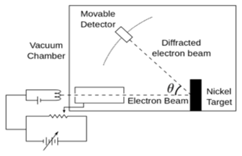

IMPORTANT OSERVATIONS OF DAVISSON AND GERMER EXPERIMENT:
• We obtained the variation of the intensity (I) of the scattered electrons by changing the angle of scattering, θ.
• With the intensity (I) of the scattered electron for an accelerating voltage of 54V at a scattering angle θ = 50º, we could see a strong peak in the intensity.
• This peak was the result of constructive interference of the electrons scattered from different layers of the regularly spaced atoms of the crystals.
• With the help of electron diffraction, the wavelength of matter waves was calculated to be 0.167 nm.
Co-relating Davisson Germer experiment and de Broglie relation:
According to de Broglie,
λ = h /p
λ = (1.227/√54) =0.167nm
λ = wavelength associated with electrons
Thus, Davisson Germer experiment confirms the wave nature of electrons and the de Broglie relation.
AIM: To verify the de Broglie hypothesis by Davisson and Germer experiment.
APPARATUS: An electron gun, accelerating anode, crystal, detector, galvanometer.
THEORY: Clinton Davisson and Lester Germer carried out an experiment in the year 1927, popularly known as
Davisson Germer’s experiment to explain wave nature of electrons through electron diffraction.
Davisson and Germer designed and built an electron gun containing a filament coated with barium oxide which is connected
to a low voltage power supply. By applying suitable potential difference from the high voltage power supply, the electron
gun emits electrons which are then made to pass through a cylinder perforated with fine holes along its axis thereby producing
a fine collimated beam of electrons.
This beam of electrons is then allowed to strike the surface of the nickel crystal. Due to this the electrons scatter in
various directions. The nickel crystal can be rotated to observe the angular dependence of the scattered electrons. The beam of
electrons produced has a certain amount of intensity which is measured by the electron detector. The electron detector is mounted
on a circular scale so that it can be rotated to observe electrons at different angles.
The electron detector is connected to a sensitive galvanometer to record the current. By moving the detector on the
circular scale at different positions that is changing the θ (angle between the incident electron beam and the scattered electron
beam), the intensity of scattered electron beam is measured for different values of angle scattering.
OBSERVATION TABLE:
| Sr.No | Angle | Current |
|---|---|---|
| 1. | ||
| 2. | ||
| 3. |
Step 1:-Select the crystal.
Step 2:-Click to Add Crystal Button.
Step 3:-Select the voltage.
Step 4:-Click on Start the animation
Step 5:-Change the values of the angle and note the readings.
Step 6:-Plot a graph
Select Crystal Name
Select Voltage Value
Select Angle Value
Select Voltage Value
Select Angle Value